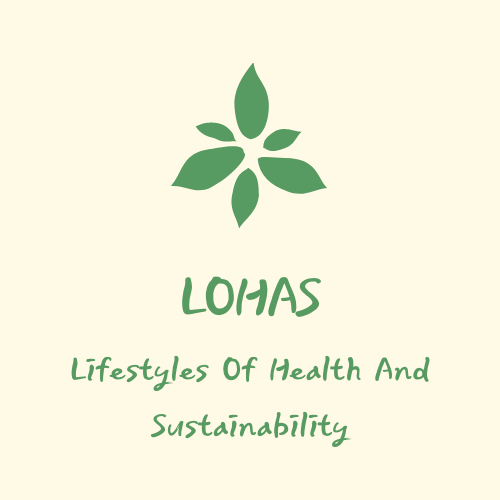
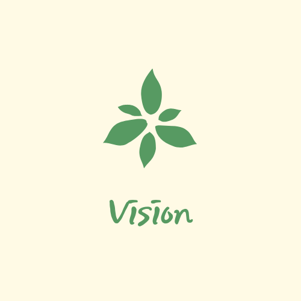

弊社は周りの人と、生命を尊重する精神に基づき、社会公益に貢献する営利団体です。
私たち金MSは、従業員をはじめ、顧客、取引先、地域社会等のステークホルダーに対する責任を第一として考え、
あらゆるステークホルダーの幸福が実現できる組織になれるのが目標であり、経営理念として考えております。
全ての利害関係者に社会低責任を果たしきるため、経済的価値はもとより、社会的価値、環境的価値を創り出していきます。
大切に考えているのはLOHAS。LOHASは英語でLifestyles Of Health And Sustainabilityの略称であり、
健康と地球環境の持続可能な発展を考えながら生きていく生活様式のことです。また、私たちは
‘私と家族の健康や幸福に止まるのではなく、さらには、地球環境まであまねく配慮していくLOHAS’が
時代的に普遍妥当な価値になり、我々の日常で空気のように染み込まれるよう、全力を尽くしてまいります。
商号：株式会社 金MS
英商号：MS.KIM Corp.
代表取締役：金 ミン秀
資本金：5億円
設立：1998年 06月 12日
人と自然を共に愛するLOHAS企業
01．経済的価値
売上高3,000億円達成
弊社は変化する環境に合わせた戦略開発や革新で2030年まで売上高3,000億円を達成し、‘Global No.1 LOHAS’企業の立地を整えてまいります。
02．社会的価値
災害率40％減縮
組織のメンバーの安全は弊社の最優先価値です。弊社は全ての事業所の災害率Zeroを最終目標に、‘平素よりの安全文化’を築いてまいります。
03．環境的価値
全製品の100％リサイクル包装製を使用
弊社は‘環境にやさしい包装の工程革新’を通して2030年まで私たちが生産・販売する全ての製品に100％リサイクル包装製を使用することを目指してまいります。
Passion with TISO
弊社のミッション＆ビジョンを達成するための核心価値は、Passion with TISOです。この核心価値の実践を通じて韓国で最も信頼される企業を越え、全世界から愛されるグローバルLOHAS企業になれるように努力してまいります。
Trust: 約束とルールを守る信頼性。
約束とルールに沿い、一貫性を保ちながら業務を果たし、行動の予測可能性を高める。
Integrity: 正しく職務を果たすための職業的正直性。
職業に対する召命意識で日頃から誠実に業務を果たし、そのプロセスと結果を公開する。
Solidarity: 組織の価値体系と目標に自分の業務を連携させる連帯意識。
弊社のLOHAS価値を理解し、これを組織の目的と戦略に反映し、実践する。
Openness: オープンマインドで協力する開放性。
様々な観点を尊重し、自由な意見交換や建設的な批判を勧め、創造的協力を促す。
Passion: 知識労働者として革新に夢中になる情熱。
仕事の目的と意味を理解し、専門性と使命感で仕事に夢中になり、共有価値創出に貢献する。